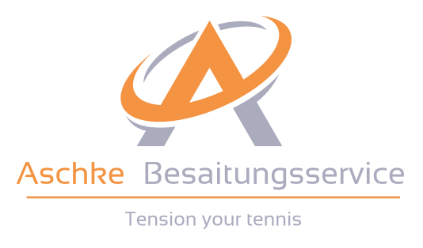
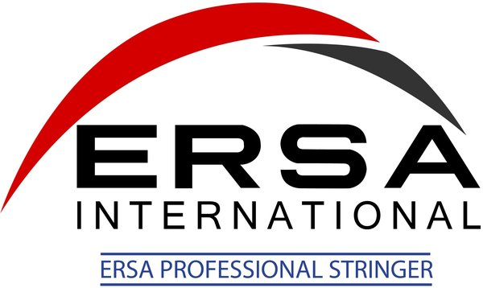
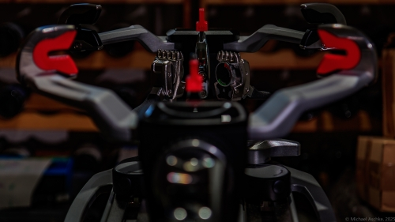
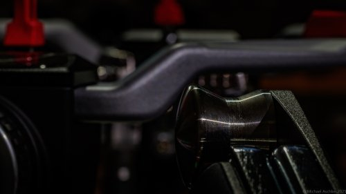
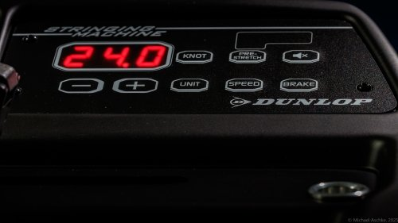
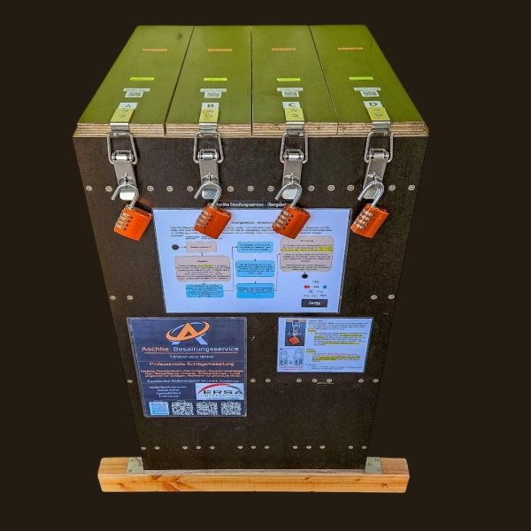
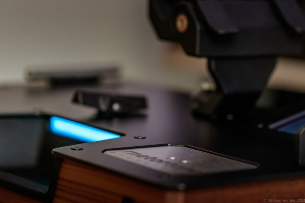

Besaitung
Nach Ihren Wünschen mit Saiten führender Hersteller – auf Wunsch mit zwei oder vier Knoten, entsprechend der Herstellervorgaben.
Tennis · Badminton · Squash
Zertifizierter ERSA Professional Stringer in Forchheim & Umgebung: kalibrierte Maschine, über 100 Saiten führender Hersteller und messbare Qualität nach jeder Besaitung.


Leistungen
Seit 2018 besaite ich Tennisschläger – zunächst privat, seit 2021 gewerblich. Seit 2026 gehören auch Badminton und Squash dazu.
Nach Ihren Wünschen mit Saiten führender Hersteller – auf Wunsch mit zwei oder vier Knoten, entsprechend der Herstellervorgaben.
Einmalig kostenfrei: Gewicht, Balance, Swingweight und Twistweight auf dem Metortune-Messgerät von Metorlab.
Individuelle Schlägeranpassung nach Wunsch: 20 € pro modifiziertem Tennisschläger zzgl. Material.
Basisgriffbänder von Babolat und Head, Overgrips verschiedener Marken, Dämpfer, Saitenschoner und Bälle.
Diadem-Schläger zum Ausleihen: 20 € Kaution, 2 € pro Tag. Und alle DIADEM-Produkte auf Anfrage.
Persönlich, per Übergabebox, per Post oder nach Terminabsprache – einfach so, wie es Ihnen passt.
Ablauf
Ich arbeite mit einer kalibrierten Dunlop AC 3.0 Stringing Machine EX-TE3900 mit linearem Greifer und Diablo-System. Diese Technik gewährleistet höchste Präzision und schont empfindliche Saiten – etwa Naturdarm oder dünne Multifilamentsaiten.

Ihr Schläger wird zunächst gereinigt und desinfiziert und anschließend mit der gewählten Saite bespannt – auf Wunsch mit zwei oder vier Knoten. Zwei-Knoten-Besaitungen bieten ein sauberes Saitenbild und geringeren Spannungsverlust, Vier-Knoten-Besaitungen ermöglichen Hybridkombinationen (z. B. mehr Spin, Kontrolle und Armschonung).
Nach jeder neuen Tennisbesaitung wird der DT-Wert (Dynamic Tension) gemessen – die Saitenbettsteifigkeit im Sweet Spot als objektiver Qualitätsnachweis. Alle Daten stehen auf einem Etikett am Schläger:
Nach Fertigstellung erhalten Sie eine Nachricht (z. B. per WhatsApp) inklusive Rechnung, dass Ihr Schläger abholbereit ist.


Über den Fragebogen, per WhatsApp, E-Mail oder Telefon.
Persönlich, per Übergabebox, Post oder Termin.
Besaitung auf kalibrierter Maschine, DT-Messung, Etikett.
Benachrichtigung inkl. Rechnung – Ihr Schläger ist bereit.
Übergabe

Ausrüstung & Technik
Jeder Tennisschläger wird einmalig kostenfrei auf einem Metortune-Messgerät von Metorlab vermessen: Gewicht, Balance, Swingweight (Schwunggewicht) und Twistweight (Spingewicht). Die Messwerte werden auf einem Etikett im Schlägerherz vermerkt.
Herstellerangaben können um bis zu 20 g vom tatsächlichen Gewicht abweichen.
Zertifiziert: ERSA Professional Stringer der European Racquet Stringers Association International.

Preise
Alle Saitenpreise sind inklusive Besaitungskosten.
| Grund | Kulanz |
|---|
Sortiment
Rund 100 Tennissaiten – monofile für Präzision und Spin, multifile für Power, Komfort und Armschonung. Das Angebot basiert auf Bewertungen erfahrener Spieler (Saitenforum.de) und Gesprächen mit professionellen Besaitern.
📄 Alle Produkte und Preise gibt es auch als Angebots-PDF – zum Öffnen, Speichern oder Ausdrucken.
Kontakt
Aschke Besaitungsservice, z. Hd. Michael Aschke, Egerlandstraße 6, 91353 Hausen